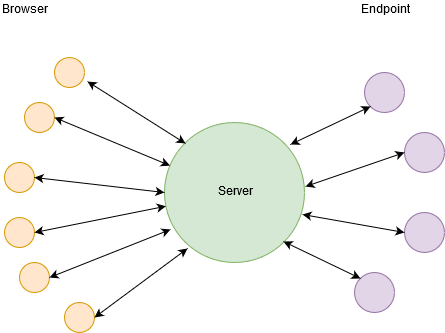
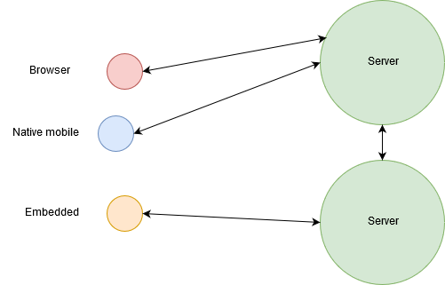
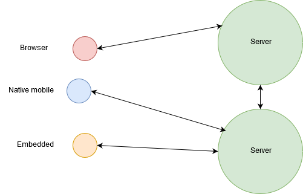

Phoenix z lotu ptaka
Krótkie wprowadzenie
Chris McChord - początki

Phoenix channels
PubSub
Izolowane i współbieżne
Transport Agnostic
Izolowane i współbieżne
Izolowane crashe
Izolowane dane
Brak globalnego GC i globalnych przestojów

